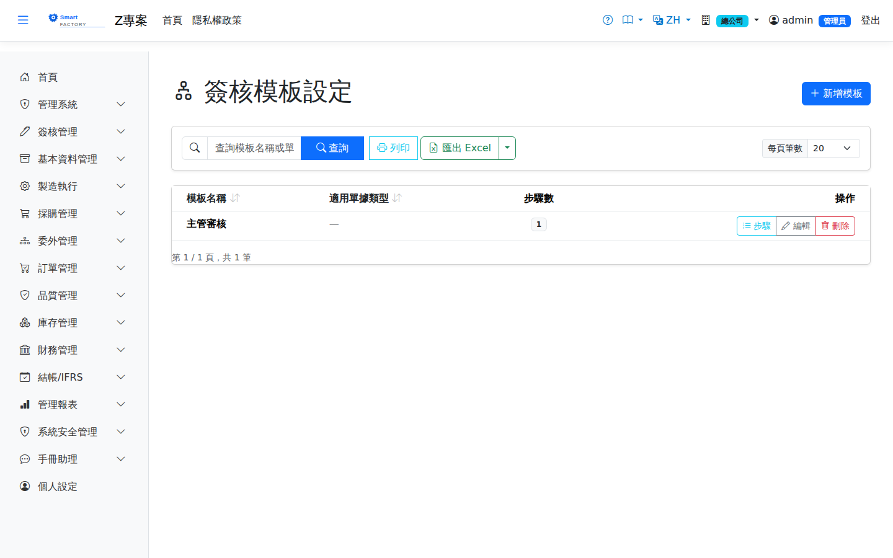
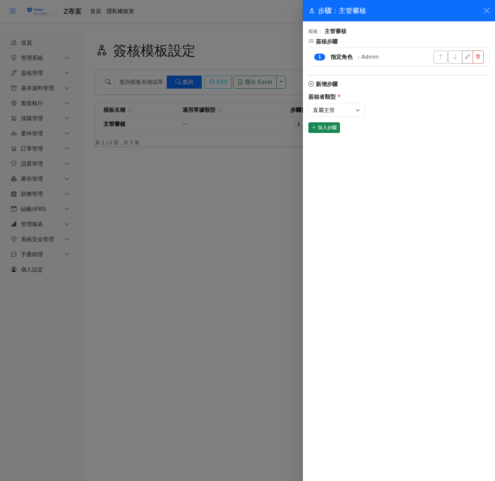

簽核模板設定Approval Template Settings
簽核模板定義An approval template defines 一條簽核路線one approval route：由哪些人、依什麼順序簽。模板本身不會自己作用，必須到: who signs, and in what order. A template does nothing on its own; it has to be attached to a document type under 作業類型簽核設定Document Approval Settings綁定到某個作業類型，該類型的單據才會走這條路線。 before documents of that type follow the route.

模板欄位Template fields
| 欄位名稱Field | 必填Required | 說明Guide |
|---|---|---|
| 模板名稱Template name | 必填Required | 辨識用的名稱，例如「採購單三級簽核」。作業類型簽核設定的下拉就是以此挑選。The name you recognise it by, such as "Purchase order, three levels". It is what you pick from the drop-down in the document approval settings. |
| 適用單據類型Document type it is for | 說明這條路線是為哪種單據設計的，供管理者辨識用。Records which kind of document the route was designed for, to help administrators tell templates apart. | |
| 同一簽核人自動跳簽Skip repeated approver | 開啟後，若某個步驟解析出來的簽核人With this on, when the approver resolved for a step 正是前面已經簽過的人is somebody who has already signed，該步驟自動視為通過，不必再簽一次。跳過的步驟仍會記入簽核歷程。, that step is passed automatically instead of asking them to sign twice. Skipped steps are still recorded in the history. |
簽核步驟Approval steps
建立模板後，點模板進入明細即可管理步驟。步驟依序執行，順序由系統維護：新增的步驟自動排到最後，可用上下移動調整，刪除後其餘步驟自動重新編號。Once a template exists, open it to manage its steps. Steps run in order and the system keeps the numbering: a new step is added at the end, the arrows move a step up or down, and deleting one renumbers the rest automatically.

三種簽核人類型The three kinds of approver
| 類型Type | 系統如何找到簽核人How the system finds the approver |
|---|---|
| 直屬主管Direct Supervisor | 依申請人From the requester's 送審當下作用中的角色role at the moment of submission，找該角色的組織單位，再取其上層組織單位底下的使用者。不需要指定人，會隨組織異動自動跟著變。, the system finds that role's organization unit and takes a user under its parent unit. Nobody is named, so the route follows changes in the organization. |
| 指定角色Role Approver | 指定一個角色，該角色的使用者You name a role; whoever holds it 切換到這個角色時sees the request while they are in that role就會在待簽清單看到這張單。適合「由採購主管簽」這種依職務而非依人的規則。. This suits rules stated by job rather than by person, such as "signed by the purchasing manager". |
| 指定使用者Specific User | 直接指定某位使用者。最明確，但該員離職或轉調時必須手動改模板。You name one person. It is the most explicit, but the template has to be changed by hand when that person leaves or moves on. |
操作步驟Steps
建立一條簽核路線Creating an approval route
有進行中的簽核時，步驟會被鎖住Steps are locked while approvals are in flight
當這個模板底下While this template has 還有未簽完的單requests that are still unsigned時，新增、修改、刪除、上下移動步驟, adding, changing, deleting and moving steps are 一律被擋下all blocked，訊息會提示「請待簽核完成或撤回後再修改」。這是刻意的保護：改動路線會讓正在跑的單失去下一站，變成永遠簽不完的孤單。, with a message asking you to wait until the approvals finish or are withdrawn. This is deliberate: changing the route would leave running requests without a next stop, stranded and impossible to complete.
刪除模板Deleting a template
| 擋下的原因Reason it is blocked | 處理方式What to do |
|---|---|
| 被作業類型簽核設定使用中A document approval setting uses it | 先到該設定改綁其他模板，或把「需要簽核」關閉。Point that setting at another template first, or turn "Requires approval" off. |
| 有進行中的簽核流程Approvals are still running | 等單據簽完或撤回。Wait until they are signed or withdrawn. |
通過檢查後，模板連同其所有步驟一併刪除。Once the checks pass, the template is deleted together with all of its steps.
匯出Export
查詢結果可匯出 Excel（.xlsx）、CSV 或 JSON，內容為模板名稱、適用單據類型與步驟數。The results can be exported as Excel (.xlsx), CSV or JSON, containing the template name, the document type it is for and the number of steps.